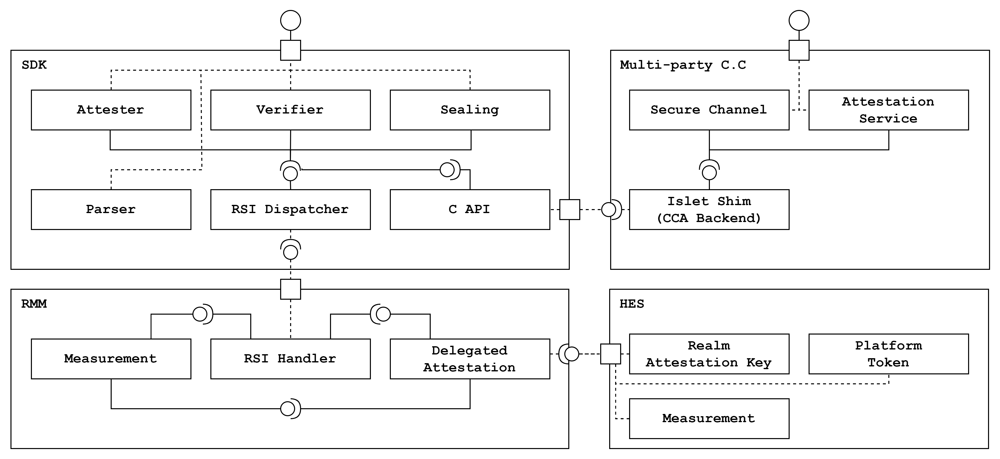

SDK Software Design Document
Table of Contents
- SDK Introduction
- System Architecture
- APIs and Interfaces
- Functional Requirements
- Non Functional Requirements
- Testing Strategy
- Conclusion
1. SDK Introduction
Overview
This Software Design Document outlines the architecture and functionality of the SDK, which provides confidential computing features for realm developers. The SDK aims to offer a set of tools and APIs that enable those features within realms. The SDK encompasses the following key features:
- Attestation
- The ability to verify the authenticity and integrity of data, actions, or entities within realms
- Established this feature securely with our own HES(Hardware enforced security)
- Secure Channel
- Securely data transmission that is resistant to overhearing and tampering
- Collaborated with the multi-part C.C. Framework
- Sealing
- Securely storing and protecting sensitive data to prevent unauthorized access and tampering
- Provided this feature in a simulated version
Limitation
SDK provieds sealing features only simulated version.
2. System Architecture
Component Structure
The SDK follows a modular architecture. The architecture comprises:
- Attester Module: Retrieves the attestation report generated by RMM.
- Verifier Module: Incorporates the logic for the realm token and platform token verification.
- Parser Module: Provides parsing specific claims of the attestation report.
- Sealing Module: Implements encryption functions in compliance with the multi-part C.C. framework
- C API Module: Provides C APIs for the multi-part C.C. Framework to achieve secure channel functionality.
- RSI Dispatcher Module: Dispatches RSI commands to RMM and get results from RMM
To support secure channel
the C API module exposes attester, verifier and sealing modules to the multi-part C.C framework.
Islet SDK interacts with several components to provide C.C. primitives securely.
The detailed SDK component and connector view is shown below.
NOTE: Delegated attestation module of Islet RMM works in progress. SDK uses the reference RMM now, which means SDK is loosely coupled with RMM.

Security Considerations
The SDK complies with the Arm CCA RMM specification and the CCA Security Model. According to the recommendation, Security Model R0004, SDK utilizes our own HES-enabled system.
3. APIs and Interfaces
The SDK provides the following interfaces:
- Rust APIs for attestation and sealing
- C APIs to multi-part C.C. framework for secure channel
- Low-level interfaces to RMM for the RSI dispatcher
The realm developers can use Rust APIs and C APIs directly for attestation and sealing. The realm developers can use multi-part C.C. framework for secure channel. Low-level interfaces are abstracted to communicate between RMM and SDK internally.
The below diagram shows how API calls flow.

4. Functional Requirements
The SDK defines functional requirements to provide C.C. primitives. Function requirements cover Rust APIs, CAPIs and internal interfaces. The APIs should be tested using Testing Strategy.
| No | Name | Description |
|---|---|---|
| FR1 | Attestation Report Generation | The SDK must provide methods to get a CCA attestation report |
| FR2 | Attestation Report Verification | The SDK must provide methods to verify a CCA attestation report |
| FR3 | Attestation Report Parser | The SDK must provide methods to parse a CCA attestation report |
| FR4 | Simulated Attestation Report Generation | The SDK must provide methods to get a CCA attestation report (simulated ver x86_64) |
| FR5 | Simulated Attestation Report Verification | The SDK must provide methods to verify the CCA attestation report (simulated ver x86_64) |
| FR6 | Simulated Sealing | The SDK must provide methods to seal user data (simulated on x86_64) |
| FR7 | Simulated Unsealing | The SDK must provide methods to unseal sealed user data (simulated on x86_64) |
| FR8 | Secure Channel | The SDK must provide methods to secure channel using multi-part C.C framework |
| FR9 | RSI Dispatcher | The SDK must provide methods to dispatch RSI commands to RMM |
5. Non-Functional Requirements
The SDK defines non functional requirements as compliance standards. The standards include the CCA RMM spec, the CCA Security Model and the multi-part C.C framework.
| No | Name | Description |
|---|---|---|
| NFR1 | Compliance | Adheres to the Arm CCA specification |
| NFR2 | Unit Testing | Comprehensive unit testing for all SDK components |
| NFR3 | Deployment | Provides guidelines for deploying the SDK to multi-part C.C framework |
| NFR4 | RMM Independency | Makes loose coupling with RMM to support other spec compliant RMM |
6. Testing Strategy
The SDK provides our own unit tests for Rust APIs(Attestation and Sealing). The SDK provides the test code to the multi-party C.C framework for C APIs(Attestation and Sealing) and secure channel.
Attestation
- Components
- Islet SDK unit tests
- Multi-part C.C. framework test applications
- Related FRs
- FR1. Attestation Report Generation
- FR2. Attestation Report Verification
- FR3. Attestation Report Parser
- FR4. Simulated Attestation Report Generation
- FR5. Simulated Attestation Report Verification
- Validation methods
- Rust APIs should be passed by SDK unit tests on both x86_64 and aarch64 systems.
- C APIs should be worked with the multi-part C.C. framework on both x86_64 and aarch64 systems.
Sealing
- Components
- Islet SDK unit tests
- Multi-part C.C framework test applications
- Related FRs
- FR6. Simulated Sealing
- FR7. Simulated Unsealing
- Validation methods
- Rust APIs should be passed by SDK unit tests on the x86_64 system.
- C APIs should be worked with the multi-part C.C. framework on the x86_64 system.
Secure Channel
- Components
- Islet SDK unit tests
- Multi-part C.C Framework test applications
- Multi-part C.C Framework attestation service
- Related FRs
- FR8. Secure Channel
- Validation methods
- C APIs should be worked with the multi-part C.C. framework on both x86_64 and aarch64 systems.
7. Conclusion
This Software Design Document provides a comprehensive overview of the SDK's architecture, functionality, functional and non-functional requirements for utilizing attestation, sealing and secure channel features on realms.